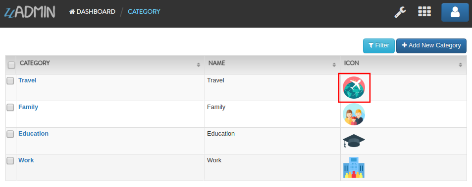
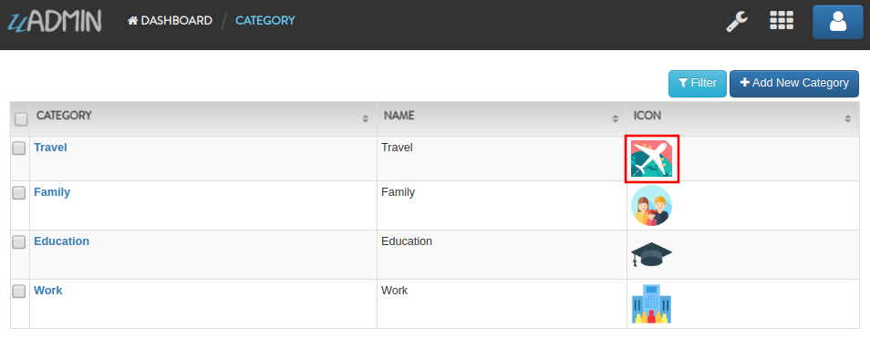
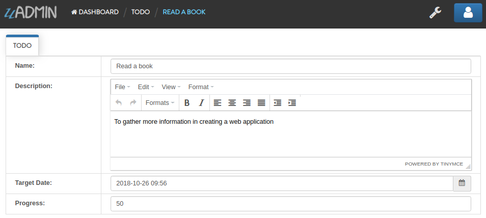
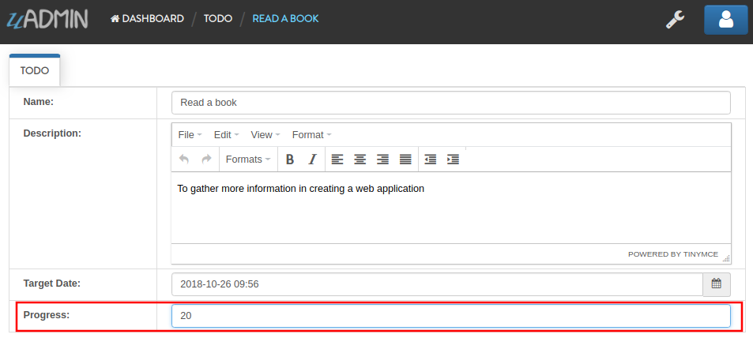
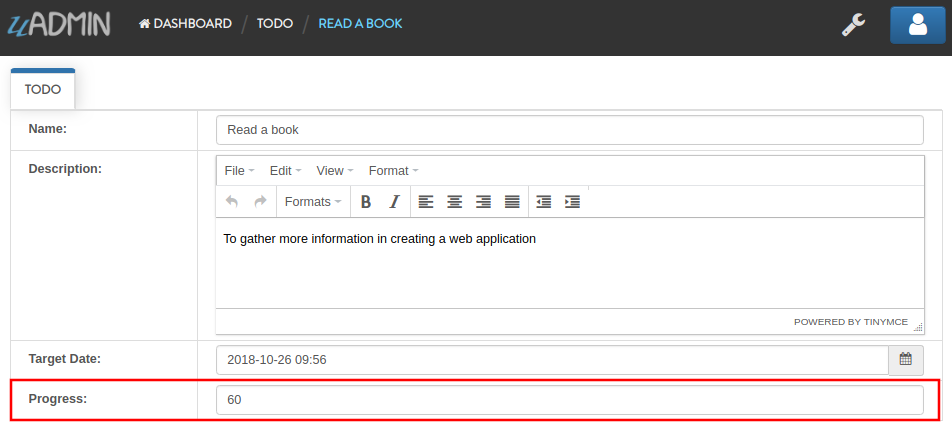
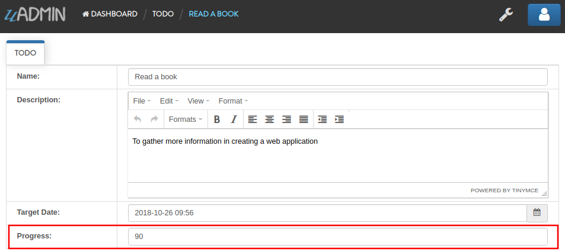

Tags¶
What is a tag?¶
[1] A tag is a generic term for a language element descriptor. The set of tags for a document or other unit of information is sometimes referred to as markup, a term that dates to pre-computer days when writers and copy editors marked up document elements with copy editing symbols or shorthand.
In uAdmin, there are two different types of tags: Meta Tags and Type Tags.
What are Meta Tags?¶
Meta tags provide metadata about the uAdmin document that describes some aspect of the contents of a model structure.
There are several kinds of meta tags:
- categorical_filter
- default_value
- display_name
- filter
- format
- help
- hidden
- limit_choices_to
- list_exclude
- max
- min
- pattern
- pattern_msg
- read_only
- required
- search
categorical_filter¶
A section of code that is designed to process user input and output request to produce a new data structure containing exactly those elements of the original data structure in the form of combo box.
Syntax:
`uadmin:"categorical_filter"`
default_value¶
Mainly used in the progress bar on which value you want to initialize.
Syntax:
`uadmin:"default_value"`
filter¶
A section of code that is designed to process user input and output request to produce a new data structure containing exactly those elements of the original data structure in the form of fill-up text.
Syntax:
`uadmin:"filter"`
list_exclude¶
A feature that will hide the field or column name in the model structure.
Syntax:
`uadmin:"list_exclude"`
pattern¶
Equivalent to regular expression that describes a pattern of characters.
Syntax:
`uadmin:"pattern:(regexp)"`
pattern_msg¶
Notifies the user once the input has been done following the given pattern.
Syntax:
`uadmin:"pattern_msg:(message)"`
required¶
A section of code that the user must perform the given tasks. It cannot be skipped or left empty.
Syntax:
`uadmin:"required"`
search¶
A feature that allows the user to search for a field or column name.
Syntax:
`uadmin:"search"`
Where do we use Meta Tags?¶
Meta tags are used to add extra features on the fields initialized in the model struct. It can be called several times.
Example:
type (model_name) struct {
uadmin.Model
Name string `uadmin:"required;filter"`
}
As shown above, required and filter are used meta tags.
What are Type Tags?¶
Type tags are used to specify what type of component should be displayed.
There are several kinds of type tags:
email¶
It identifies an email box to which email messages are delivered. It follows the syntax as follows: (name)@(domain)
e.g. abc123@gmail.com
Syntax:
`uadmin:"email"`

image¶
A tag to mark a field as an image.
Syntax:
`uadmin:"image"`
Open your Todo project. Go to your category.go in the models folder and let’s use the `uadmin:”image”` in the Icon field.
package models
import "github.com/uadmin/uadmin"
// Category model ...
type Category struct {
uadmin.Model
Name string `uadmin:"required"`
Icon string `uadmin:"image"` // <-- place it here
}
To run your code:
$ cd ~/go/src/github.com/your_name/todo
$ go build; ./todo
[ OK ] Initializing DB: [10/10]
[ OK ] Server Started: http://127.0.0.1:8000
Let’s open the category model.

Create a new data in the category model. Press Save button below afterwards.

Output

Now let’s do something even cooler. In uAdmin, the image feature will not only just upload your image file but also allows you to crop your own picture through the model itself. In order to that, click the image icon highlighted below.
Click the crop icon on the top left corner.

You are now set to edit mode. Click any points highlighted below then drag your mouse in order to crop/resize your image.


Once you are done, click the Crop button below and refresh the webpage to save your progress.
Well done! You have mastered the concepts of creating and modifying the image in the model.
m2m¶
Many-to-many relationship between two entities
multilingual¶
A tag that allows the user to use more than two languages for input.
Syntax:
`uadmin:"multilingual"`
password¶
A string of characters that hides the input data for security.
Syntax:
`uadmin:"password"`
progress_bar¶
A feature used for testing the data to check whether the instructions will execute or not.
Syntax (default):
`uadmin:"progress_bar"` // Any number from 0 to 100 will display blue as the default color.
Syntax (one parameter):
`uadmin:"progress_bar:100:orange"` // Any number from 0 to 100 will display orange color.
Syntax (multiple parameters):
`uadmin:"progress_bar:40:red,70:yellow,100:green"` // Any number from 0 to 40 will display red color; 41 to 70 will display yellow color; 71 and above will display green color.
Open your Todo project. Go to your main.go and let’s use the default tag of the Progress field to `uadmin:”progress_bar”` inside the TODO struct.
Copy this code below:
Progress int `uadmin:"progress_bar"`
To the todo.go inside the models folder
package models
import (
"time"
"github.com/uadmin/uadmin"
)
// TODO model ...
type TODO struct {
uadmin.Model
Name string
Description string `uadmin:"html"`
TargetDate time.Time
Progress int `uadmin:"progress_bar"` // <-- place the tag here
}
To run your code:
$ cd ~/go/src/github.com/your_name/todo
$ go build; ./todo
[ OK ] Initializing DB: [9/9]
[ OK ] Server Started: http://127.0.0.1:8000
Let’s open the Todos model.

On the right side, click Add New Todo.

Input the progress value to 50 then let’s see what happens.
Tada! The progress bar is set to 50% with the blue color as the default one.

If you want to change the color of the progress bar, let’s set a parameter and the value inside the tag. Go back to your main.go again. Let’s say I want to display an orange color between the range of 0 to 100. Add this piece of code after the progress_bar tag: :100:orange (100 is the value and orange is the parameter)
// TODO model ...
type TODO struct {
uadmin.Model
Name string
Description string `uadmin:"html"`
TargetDate time.Time
Progress int `uadmin:"progress_bar:100:orange"` // <-- place the tag here
}
Run your code again, go to the Todos model in the uAdmin dashboard then replace the value of the progress bar to something like 30.


If you want some conditions on your progress bar, let’s set multiple parameters inside the tag. Let’s say I want to display a red color between the range of 0 to 40, yellow color between 41 to 70, and green color between 71 to 100. Add this piece of code after the progress_bar tag: :40:red,70:yellow,100:green
// TODO model ...
type TODO struct {
uadmin.Model
Name string
Description string `uadmin:"html"`
TargetDate time.Time
Progress int `uadmin:"progress_bar:40:red,70:yellow,100:green"` // <-- place the tag here
}
Run your code again, go to the Todos model in the uAdmin dashboard then replace the value of the progress bar to something like 20.

What if I set the value in the progress bar to 60?

How about 90?

Well done! You have mastered the concepts of creating and modifying the progress bar in the model.
Where do we use Type Tags?¶
Type tags are used to implement the type of component on the fields initialized in the model struct. Unlike in meta tags, type tags can be called only once.
Example:
type (model_name) struct {
uadmin.Model
Icon string `uadmin:"image"`
}
References¶
| [1] | Rouse, Margaret (2005, April). Tag. Retrieved from https://searchmicroservices.techtarget.com/definition/tag |